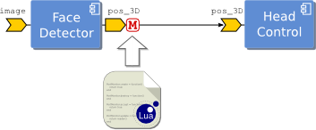
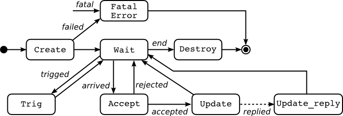
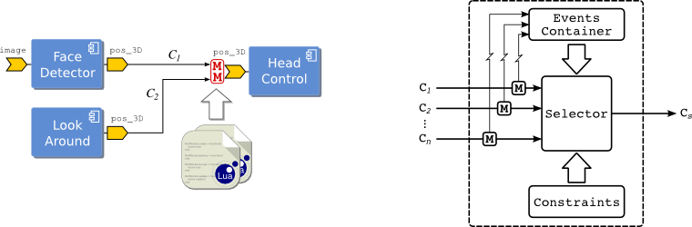

- Author
- Ali Paikan
Contents
What is the portmonitor carrier?
In short, it is an extended functionality of a port implemented as a new carrier which allows to dynamically load at run–time script (or dynamically linked libraries such as .so/.dll) and plug it into the port of an existing module without changing the code or recompiling it. Using run-time scripts (currently written in Lua) or DLLs we can access and modify the data traveling through the port using a simple API. In this way extra functionalities of a component can be added during application development time and without the need to modify and rebuild the component itself.
Which functionalities are we talking about?
- Data Guarding and Filtering
- Data Transformation
- Logging and Performance Monitoring
- Monitoring communication for Quality of Service

An example of port monitor. The output port of FaceDetector modules is extended with a plug-in which provides access to the outgoing data through scripting language (e.g., Lua)
What do I need to use portmonitor carrier?
- Enable portmonitor carrier (ENABLE_yarpcar_portmonitor_carrier=ON) in CMake and compile YARP.
- For using compiled plug-ins (.dll/.so) with the portmonitor carrier you only need to put them in system path where commonly DLLs can be found. For example in the Linux machines you can set the ‘LD_LIBRARY_PATH’ to point the folder where you compiled the DLL.
How can I use port monitor?
You should connect two ports using the YARP 'portmonitor' carrier modifier and explicitly tells the carrier which type of plug-in you are using (lua or dll):
$ yarp connect /out /in tcp+recv.portmonitor+type.lua+context.myapp+file.my_lua_script
This rather weird syntax can be read as follow. Connect port /out to /in using the tcp transport protocol. Chain the receiver (recv) side of the port /in to the plugin portmonitor with parameters: type=lua, context=myapp and file=my_lua_script ('.' here can be indeed interpreted as an assignment operator).
This connects '/out' to '/in' using tcp and a portmonitor carrier modifier on the receiver side. Alternatively the script can be plugged into the sender port:
$ yarp connect /out /in tcp+send.portmonitor+type.lua+context.myapp+file.my_lua_script
or a DLL can be loaded instead of the Lua script:
$ yarp connect /out /in tcp+send.portmonitor+type.dll+file.my_dll_file
- 'recv.portmonitor' or 'send.portmonitor' indicates that a portmonitor carrier modiffier should be used respectively in receiver or sender side.
- 'type.lua' or 'type.dll' respectively tells the carrier to expect Lua script or a DLL file.
- 'context.myapp' is only used for the scripts and it tells the resource finder to load the script from the 'myapp' context. If context is not used, the current path where module is launched will be searched for the script file.
- 'file.my_lua_script' indicates 'my_lua_script' (alternatively my_dll_file) should be loaded by monitor object. For the scripts, the 'my_lua_script' is located using standard Yarp Resource Finder policy. The postfix (e.g., '.lua') is not necessary. The DLLs should be located in the system standard path, the same folder the program is running or the paths indicated in ‘LD_LIBRARY_PATH’ on the Linux machines.
Portmonitor life cycle and API

The life cycle of port monitor.
A callback function is assigned to each state (except Waiting) which can have a corresponding implementation in the user’s script. Using these callbacks, users have full control over the port’s data and can access it, modify it and decide whether to accept the data or discard it. The Port Monitor starts in the Create state in which ‘PortMonitor.create’ callback is called. The initialization of the user’s code can be done at this point. Returning a true value means that the user’s initialization was successful and the monitor object is able to start monitoring data from the port. When data arrives to the monitor, ‘PortMonitor.accept’ is called and an instance of Yarp ‘Things’ object is passed to the callback function. In this callback, user can access (for reading purposes only) the data, check it and decide whether to accept or discard it. The return value of this function indicates whether the data should be delivered (accepted) or discarded. If the data is accepted, ‘PortMonitor.update’ is called, at which point the user has access to modify the data.
- PortMonitor.create : This is called when the script is loaded and the port monitor object is created (i.e. when the ports are connected). Returning 'false' will avoid calling other functions and stop the monitor object. The 'options' parameter is of type yarp.Property object (consists of a set of properties/values) provides some information about the current connection which the PortMonitor object is attached. For example "sender_side" or "receiver_side" keys in the options list respectively indicates whether the port monitor object is attached to the sender side or the receiver side of the connection. They can be accessed as ‘options:find("sender_side"):asBool()’
PortMonitor.create = function(options)
...
return true --default
end
- PortMonitor.destroy: This is called when the monitor object is destroying (e.g., on disconnect)
PortMonitor.destroy = function()
...
end
- PortMonitor.accept : This is called when a new data arrives to the port. User can access the data and check whether it should accept or discard it. Returning 'false' will discard delivering data to the port and avoids calling PortMonitor.update().
PortMonitor.accept = function(thing)
...
return true --default
end
- PortMonitor.update : This will be called if the data is accepted by PortMonitor.update(). User can modify and return it using ‘Thing’ object.
PortMonitor.update = function(thing)
...
return thing
end
- PortMonitor.update_reply : When a portmonitor object attached to an RPC port (two-way connection), this will be called upon receiving the reply. User can modify and return the replied message using ‘Thing’ object. PortMonitor.update() and PortMonitor.update_reply() together allows the user to access the outgoing message and incoming reply within a RPC port. Notice that in the current implementation, this feature is only available if the portmonitor is attached to a sender port (RPC Client).
PortMonitor.update_reply = function(thing)
...
return thing
end
PortMonitor.setparam = function(param)
...
end
PortMonitor.getparam = function()
...
return param
end
- PortMonitor.trig : By default, this will be called when one of the peer connections to the same input port receives data. The peer-trigging is not available if the portmonitor is plugged into the sender port. A port monitor will usually act as a passive object in which PortMonitor.accept() and PortMonitor.update() callbacks are executed in sequence as data arrives. However, one may need to periodically monitor a connection (within a specific time interval) and, for example, generates proper events in case of delay in the communication. For this purpose, a portmonitor object can be configured to call PortMonitor.trig() within desired time intervals using PortMonitor.setTrigInterval().
PortMonitor.trig = function()
...
end
- Note
- Port monitor carrier looks for the global table name 'PortMonitor' in the user script and calls its corresponding functions if exist. Notice that the PortMonitor is a global variable and should not be altered or assigned to nil.
-
Here we only described the callbacks in Lua scripting language. Indeed the same callbacks are also available in C++ for implementing plug-ins as DLLs. Please refer to An example which shows how to use C++ and DLLS to modify incoming data in an input port for the details.
Port Arbitration
A port arbitrator is an extended functionality of an input port which can be configured to arbitrate data from multiple source based on some user–defined constraints.

An example of using port arbitrator (left) and the architecture of port arbitrator (right). Straight lines show the data flow and zigzag lines represent event flows
A port arbitrator consists of multiple port monitors, a set of selection constraints, an event container and a selector block. Port arbitrator extends the port's scripting API for setting constraints and altering events in the container. In fact, when a port monitor is used in an arbitrator, the user's script can access the extended API for arbitration.
A port monitor can be attached to each connection (Ci) going through the port arbitrator. It monitors the data from connection and inserts the corresponding events into a shared container. A port monitor can also remove an event (if previously inserted by itself) from the container. Normally events have infinite life time. This means that they remain valid in the container until they are explicitly removed by the monitor object. An event can also have a specific life time. A time event will be automatically removed from the container when its life time is over. For each connection Ci , there is a selection constraint written in first order logic as a boolean combination of the symbolic events. Upon the reception of data from a connection, the selector evaluates the corresponding constraint and, if satisfied, it allows the data to be delivered to the input port; otherwise the data will be discarded.
Beside the port monitor callbacks, there is a set of auxiliary functions which is offered by the PortMonitor. These auxiliary functions are used for the port arbitration (See An example of using port monitors for arbitrating multiple connections).
- PortMonitor.setEvent(event, lifetime) : set an event (with optional lifetime) into port event record
- PortMonitor.unsetEvent(event) : unset an event into port event record
- PortMonitor.setConstraint(rule) : set the selection rule
- PortMonitor.getConstraint() : get the selection rule
Examples and tutorials
Further reading
- [1] Data Flow Port's Monitoring and Arbitration, Paikan, A., Fitzpatrick, P., Metta, G., and Natale, L., Journal of Software Engneering for Robotics, vol. 5, no. 1, pp. 80-88, 2014. [pdf]
- [2] Enhancing software module reusability using port plug-ins: an experiment with the iCub robot, Paikan, A., Tikhanoff, V., Metta, G., and Natale, L., International Conference on Intelligent Robots and Systems (IROS 2014). [pdf]


 1.8.20
1.8.20